fast.vfx.3d 海外社媒矩阵 · 首月复盘与增长方案
覆盖 YouTube Shorts、Instagram Reels、TikTok、Snapchat Spotlight 四个平台
11 条 Reels 合计 13,390 播放，中位 1,553，约为 YouTube（302）的 5.1 倍；点赞率（点赞 ÷ 播放）3.7%。Instagram 与 YouTube 列为两个核心平台。
查看 Instagram 表现 →YouTube
11 条 Shorts 合计 6,699 播放，中位 302，订阅 7，点赞率 1.5%。9/29 起整体走高：此前 5 条中位 160，9/29–10/6 的 4 条全部 ≥300、3 条过千。过千的都是新奇场景或挑战钩子
查看 YouTube 表现 →TikTok / Snapchat
TikTok 10 条后台合计 10 次播放（中位 2）、0 粉，账号存在分发限制，已新起账号，待冷启动中。Snapchat 后台合计 28 次播放，我们已于 9/29 暂停
查看 TikTok 表现 →同一素材，Instagram 明显偏爱制作过程，YouTube 差异不明显
Instagram 上制作过程类中位 1,668，8 秒成片类约 362；YouTube 两类中位相近（302 vs 约 258）。我们按平台分别剪辑与包装。
查看逐条明细 →发布框架：先拆解、后成片
YouTube 水母城三条制作集逐集走高（302 → 1,135 → 1,576），Instagram 制作过程类中位 1,668，8 秒成片类约 362：过程是钩子，成片放在最后揭晓。
查看框架 →数据来源：TikTok、Snapchat 的总播放与中位为后台数据，其余为 10/12 采集的公开数据。
平台表现
四个平台的趋势与单平台要点单条播放时间线（按发布日期）
Instagram Reels
- 11 条中 6 条 ≥1,500 播放，另有 5 条低于 700
- 30 粉丝、千级单条播放：流量主要来自推荐流的非粉丝
- 水母城系列 4 条中 3 条 1,700+，最高 2,216（113 赞）；评论里出现 “How?😮” 等求教程信号
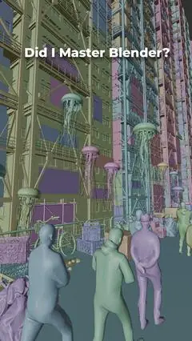
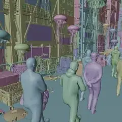
账号卡片 · 10/12 采集 · 公开数据
YouTube Shorts
- 11 条中 4 条过千、3 条不足 100：中位 302、平均 609，单条差距大
- 「8 hours left」在播放 ≥100 的 8 条中点赞率最高（2.2%）
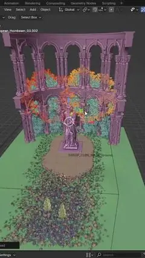
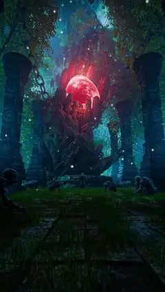
账号卡片 · 10/12 采集 · 公开数据
TikTok
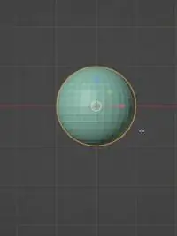
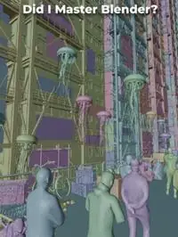
账号卡片 · 10/12 采集 · 总播放与中位为后台数据，单条为公开计数
Snapchat Spotlight
- 9/25–9/29 发布 4 条 Spotlight，后台合计 28 次播放、中位 7
- 我们已于 9/29 暂停更新，资源集中到 Instagram 与 YouTube（账号保留）
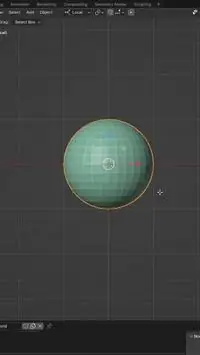
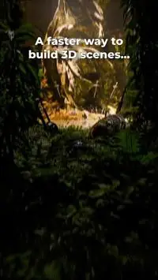
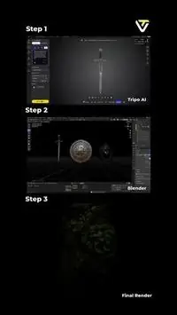
账号卡片 · 10/12 采集 · 总播放与中位为后台数据
策略与行动
平台优先级 · 内容方向 · 对标账号 · 热点借势 · 发布框架平台优先级（基于数据更新）
中位 1,553、点赞率 3.7%，表现最稳
系列按“先拆解、后成片”排序，每集新画面开头，标题写成钩子，10–25 秒精剪。
启用新账号。
内容方向（结合对标与本账号数据）
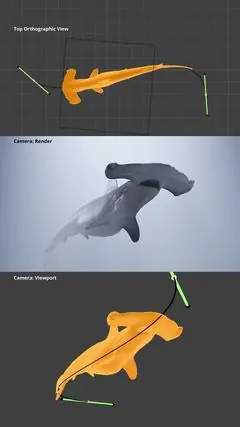
@Polyfjord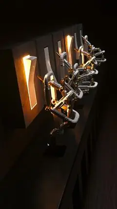
@Polyfjord借鉴点Polyfjord 两条的末帧都接回首帧（鲨鱼骨骼循环 4.6万播放、点赞率 1.8%；开关复节奏点赞率 5.8%），Shorts 自动重播直接叠加完播；Stefan 的标题直接下结论（“1-Prompt 3D Animation”），11.3万播放。
借鉴点文案直接写出 prompt 内容：OnlyRJ 把给 Claude 的 prompt 拆成 3 条要点（150 只鸟、3 条群集规则、250 帧烘焙），FreeInd 把整句 prompt 用引号贴在第二行、封面只留成片画面，观众为照抄 prompt 而收藏。
借鉴点标题以问句收尾（Who won? / Can GPT-6 Astra Build…? / Can AI Build…?），把评论区变成答题区；Erik 的 “Ai Vs VFX - Who won?” 9.1万播放、点赞率 2.0%。
借鉴点文案只留一个二选一问题，评论区直接变成投票区；gorilland_ 的“选哪条毛毯”2,050万播放、点赞率 5.4%，Erik 与 RenderX 用同一句式（Which version won? / Which Helmet…?）。
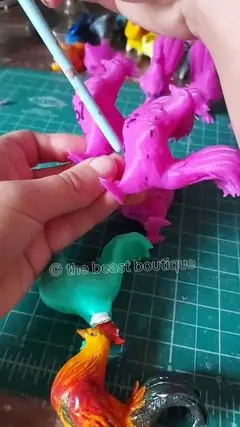
@thebeastboutique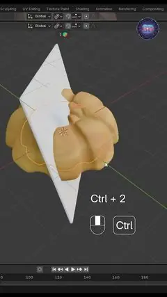
@MohamedElsefi借鉴点开场直接挂原生“回复评论”贴纸，评论原文就是钩子：The Beast Boutique 按评论要求拆解手办配平流程（点赞率 5.3%），Mohamed Elsefi 把“那夹心版呢？”做成续集，OVERACT 回应差评 10.1万播放。
借鉴点Reel 文案结尾直接向粉丝征集下一个题目（“What super hero should i create next?”“Which anime should i create next?”），评论区就是下一期的选题池，与快拍提问贴纸征集 prompt 同一机制。
借鉴点用 TikTok 原生“视频回复评论”贴纸开场：OVERACT 回应质疑 CG 的评论，15 秒拿到 41.3万播放、点赞率 4.1%；jelleebun 按评论点单做出粉色玫瑰光标，点赞率 7.2%。
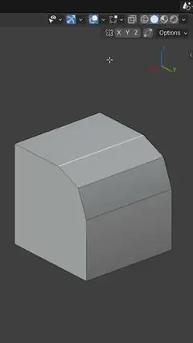
@JoshGambrell借鉴点标题 = 搜索词（Fix / Why isn’t … working / How to fix … in Blender），一条只演示一个修复；BlenderVitals 的 “Fix Bevel Overlap in Blender!” 300.2万播放、点赞率 1.5%。
借鉴点封面直接分屏或分层标注 Viewport / Final，刷到第一眼就看懂前后差距——“翻车 vs 修好”封面照此排版。
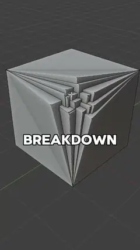
@BlenderVitals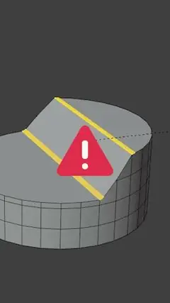
@JoshGambrell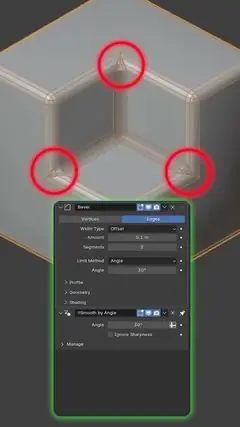
@JoshGambrell借鉴点给技巧起名字（Merge by distance / BOOLEAN trick / Bevel Profile），一条只讲一招；BlenderVitals 229.2万播放，Josh Gambrell 两条点赞率 2.4% 与 2.9%。
借鉴点文案把做法写成可照做的步骤说明，并直接喊 “Save this post”（OnlyRJ 的星系模拟、Ciro Sannino 的图片转镂空面板），观众为留存步骤而收藏。
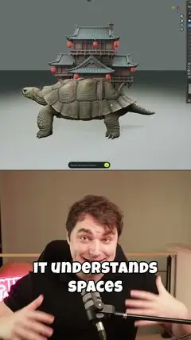
@stefan_3d_ai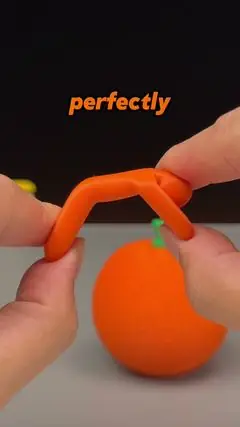
@TripoAI借鉴点标题直接点出热点 / IP 名（House of the Dragon / GPT-6 / Meccha Chameleon），借现成搜索量；TripoAI 的 “Meccha Chameleon but in real life!” 754.5万播放。
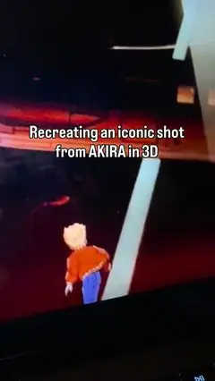
@yakovlevart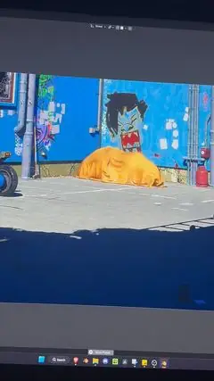
@yakovlevart借鉴点配乐直接用 Instagram 标注为热门的音频（Kanye West《Father Stretch My Hands Pt. 1》、《MONTAGEM SPECTRAL RENITCH V1 (Slowed)》、《EL CONTROL (Super Slowed)》），3D 成片直接配热门音频。
借鉴点直接套用梗原声与热门音乐（Ed bassmaster 梗音、《Witch Doctor》、《Goth (Slowed)》），3D 画面 + 熟悉音频；3dsense 8 秒拿到 38.3万播放、点赞率 14.4%。
平台适配：点击任一平台行展开参考作品，点击封面打开原帖 · 参考作品 10/13 采集 · 公开数据 · Instagram 不公开播放数，显示点赞
对标账号（18 个 · 头部 / 中腰部）
风格无缝魔术特效短剧
对标价值头部钩子模板；「AI vs 真实」话题直接对口
风格意大利双人 CGI 改造现实场景 + 幕后
对标价值成片 → 幕后拆解双发，对应先成片后拆解框架
风格真人 + 3D 蜘蛛侠荡蛛丝
对标价值单一招牌特效系列化，7–12 秒极短
风格手工 3D 恐怖微短片，主打 No AI
对标价值节日热点 + 系列世界观，对应水母城市
风格VFX 艺术家点评 / 拆解热门画面
对标价值借热点 + 拆解，对应 AI vs 手工
风格3D 动画重做影视 IP 场景
对标价值IP 改编选题，可直接模仿
风格13 秒 Blender ASMR 解压循环；3D 概念世界
对标价值固定时长模板高频更新，最易复制；审美 + 商业化路径
风格Blender 教程 + CGI vs 实拍对比
对标价值「CGI 还是实拍？」对比选题
风格Blender 速成短教程
对标价值「X 原来这么简单」句式；IG 体量最接近
风格单人 VFX 日常奇观 + 评论征集点子
对标价值「回复评论做视频」互动机制
风格创意 3D 机械 / 造物
对标价值「做出现实里做不出的物件」创意标题
风格个人科幻短片 + 速成技巧
对标价值单人电影感世界观，接近水母城市
风格抽象 / 设计向 Blender
对标价值视觉审美，封面可借鉴
风格3D 软件 / AI 工具资讯
对标价值工具资讯选题，对应 Tripo
风格风格化角色 + 功能速览
对标价值「5 分钟看懂新版本」
风格实验性程序化动画
对标价值短小视觉奇观，最接近 fast.vfx.3d
风格UE5 电影级短片
对标价值单人 IP 改编预告
粉丝 10/13 采集 · 代表作播放 10/14 采集 · 公开数据 · 点击账号名或平台标签打开主页，点击封面打开原视频
热点借势日历（10/12 – 12/12）
- 10/24 – 10/31万圣节（10/31，周六）「8-Hour Challenge」万圣节特辑：AI 南瓜道具 → 闹鬼废墟，红光场景换成万圣节版本InstagramYouTubeTikTok
- 11/6《哥斯拉 -0.0》（Godzilla Minus Zero）北美上映复刻怪兽登场镜头：拆解①建模 → 拆解②破坏模拟 → 成片对比原片YouTubeTikTok
- 11/26感恩节AI 生成整桌感恩节大餐道具，镜头从 prompt 推到成桌场景InstagramYouTube
- 11/27 – 11/30黑色星期五 · 网络星期一赛博霓虹商场场景（水母城续作）：购物袋道具 → 霓虹商场 → 夜景成片TikTokYouTube
- 12/1 – 12/4SIGGRAPH Asia 2026（吉隆坡）会展期间做 1 条 AI-3D 新技术解读，对标 Stefan 3D AI 的跟进式解读YouTube
- 12/1 – 12/12圣诞倒数「12 天 12 个圣诞道具」日更系列，第 12 天合成完整圣诞场景InstagramTikTok
- 12/7 – 12/1212/18《复仇者联盟：毁灭日》《沙丘 3》上映预热沙丘沙虫 / 复仇者名场面的“AI vs 手工”复刻对比，上映前一周发布YouTubeTikTok
- 12/10The Game Awards 2026颁奖当晚发布年度游戏场景致敬：AI 8 小时复刻 1 个提名作品场景YouTubeTikTok
日期为美国时间。热点内容同样按“拆解在前、成片压轴”发布，并计入每周 YouTube / Instagram 4–5 条的节奏。
发布框架
- 每个系列 3 集：拆解①（挑战或提问开场）→ 拆解②（新画面、关键步骤）→ 成片揭晓（结尾放完整成片）。
- 每集开头 1 秒用新画面，结尾一句预告下一集；成片集标题写“结果”，拆解集标题写“过程 + 悬念”。
- 拆解集不复用成片画面；成片揭晓集只在系列最后发布一次。
附录
逐条明细* Instagram 的系列归属按与 YouTube 版本的文案 / 主题对应；Instagram 公开页面不提供单条时长，日期按页面显示的月日。署名 “Created by @Galaziart” 已出现在全部 11 条 YouTube 描述中。播放 <100 的条目点赞率显示为「—（样本过小）」。TikTok、Snapchat 单条为公开计数，两者的总播放（10 / 28）与中位为后台数据。YouTube 评论数仅 1 条可见。点击表头可排序；手机上仅显示平台、发布、内容、播放与点赞率列。